Colonia de hormigas
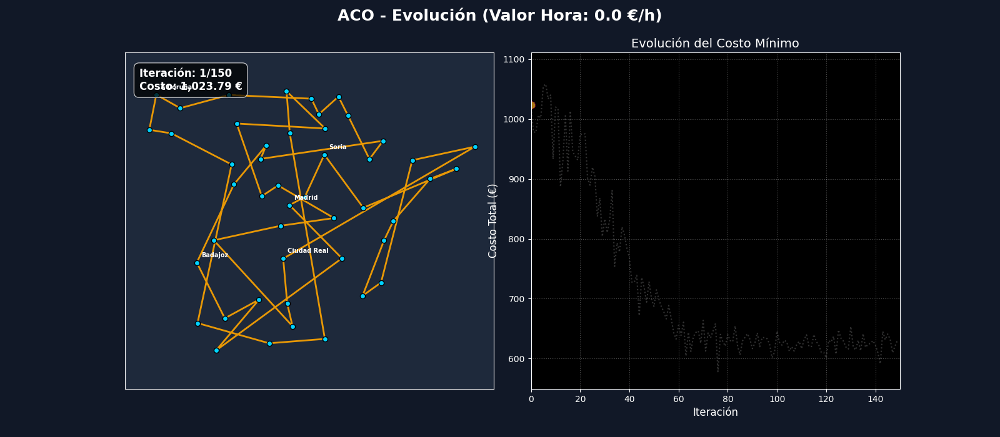
Figura 1
Evolución de la mejor ruta de la colonia de hormigas con $v = 0$ €/h.
Costo final de 578.14 €.
Un vendedor, 47 capitales y una pregunta: ¿cuánto vale su tiempo? Colonias de hormigas frente a algoritmos genéticos.
valores de la hora en los que la colonia de hormigas halló una ruta más barata que el algoritmo genético.
más caras son las rutas del algoritmo genético que las de la colonia de hormigas.
del costo de la mejor ruta a 25 €/h es el tiempo del vendedor. El combustible pesa 21 % y los peajes 2 %.
recorridos distintos si las distancias fueran simétricas. Imposible revisarlos todos.
Un vendedor debe visitar las 47 capitales de provincia de la España peninsular y volver a la ciudad de salida. Se excluyen Palma, Las Palmas de Gran Canaria y Santa Cruz de Tenerife por ser insulares, y Ceuta y Melilla por no ser accesibles por carretera desde la península.
Es el problema del viajante (TSP). Lo difícil es que el número de recorridos crece de forma explosiva, así que en lugar de revisarlos todos usamos dos metaheurísticas: colonias de hormigas y algoritmos genéticos.
$$C_{ij} = \underbrace{\tfrac{d_{ij}}{100}\, c\, p}_{\text{combustible}} + \underbrace{\text{peaje}_{ij}}_{\text{peajes}} + \underbrace{t_{ij}\, v}_{\text{tiempo}}$$
Es un coeficiente económico ($v$, en €/h) que traduce cada hora de viaje a dinero. Reúne dos cosas: el costo laboral directo (salario, prestaciones y sobrecostos) y el costo de oportunidad, es decir, las ventas que se dejan de hacer mientras se conduce. Con $v = 0$ solo importan el combustible y los peajes. Cuanto mayor es $v$, más conviene ahorrar horas aunque cueste más en carretera.
Combustible, peajes y tiempo se suman en una sola matriz de costos de 47 × 47.
Distancias y tiempos salen de rutas por carretera, no de líneas rectas.
Se repite el experimento con cinco valores de $v$ para ver cómo cambia la solución.
Todos los datos se descargaron una vez y se guardaron en archivos CSV, de modo que los algoritmos corren sin conexión a internet.
Tabla 1
Fuentes de los componentes del costo
| Componente | Cómo se obtuvo |
|---|---|
| Distancias y tiempos | Servicio Table de OSRM (modo conducción), una sola consulta para los 47 × 47 pares |
| Peajes | Tarifas vigentes de las autopistas de peaje, cargadas a mano en una matriz |
| Combustible | $\tfrac{d}{100} \cdot c \cdot p$ con $c = 5.5$ L/100 km y $p = 1.55$ €/L (gasolina 95) |
| Valor de la hora | Referencia del coste laboral por hora del INE, alrededor de 25 €/h; se probaron 0, 15, 25, 35 y 60 |
Nota. Consulta de las fuentes de peajes, precio del combustible y coste laboral: 10 y 11 de octubre de 2026. La referencia completa está al final.
Ambos usan solo la matriz de costos. Se implementaron con la librería scikit-opt.
Cada hormiga arma un recorrido eligiendo la siguiente ciudad según la feromona acumulada y lo barato que es el tramo. Los mejores recorridos refuerzan su rastro y la evaporación borra los demás.
Mantiene una población de recorridos completos. En cada generación se seleccionan los mejores, se cruzan entre sí y se mutan para producir la siguiente generación.
Tabla 2
Hiperparámetros de los dos métodos
| Método | Parámetros configurados |
|---|---|
| Colonia de hormigas | 60 hormigas, $\alpha = 1$, $\beta = 2$, $\rho = 0.1$ |
| Algoritmo genético | población 60, probabilidad de mutación 0.1 |
Nota. El resto de parámetros del algoritmo genético son los valores por defecto de scikit-opt. Se evaluó cada solución final con las matrices de distancia, tiempo, combustible y peajes para desglosar su costo.
A la izquierda del GIF, el recorrido sobre el mapa de España; a la derecha, la curva del costo mínimo. La estrella roja marca la ciudad de salida. Elige un valor de la hora para verlo.

Figura 1
Evolución de la mejor ruta de la colonia de hormigas con $v = 0$ €/h.
Costo final de 578.14 €.
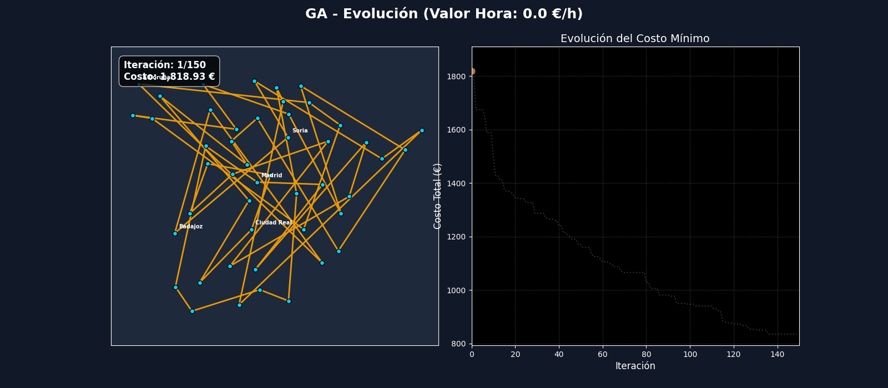
Figura 2
Evolución de la mejor ruta del algoritmo genético con $v = 0$ €/h.
Costo final de 835.34 €.
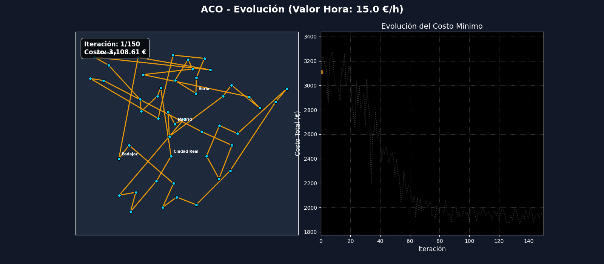
Figura 3
Evolución de la mejor ruta de la colonia de hormigas con $v = 15$ €/h.
Costo final de 1 868.39 €.
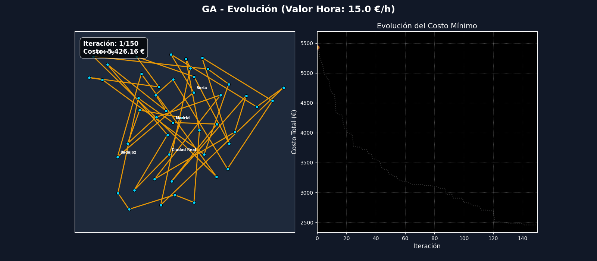
Figura 4
Evolución de la mejor ruta del algoritmo genético con $v = 15$ €/h.
Costo final de 2 454.67 €.
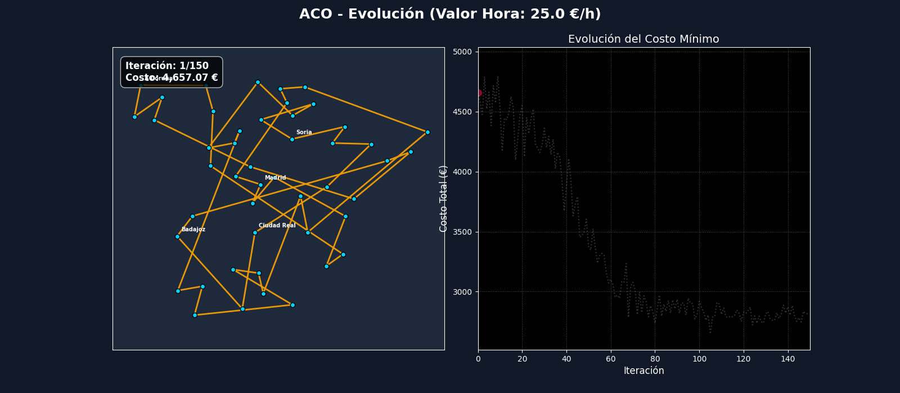
Figura 5
Evolución de la mejor ruta de la colonia de hormigas con $v = 25$ €/h.
Costo final de 2 648.53 €.
Figura 6
Evolución de la mejor ruta del algoritmo genético con $v = 25$ €/h.
Costo final de 3 666.76 €.
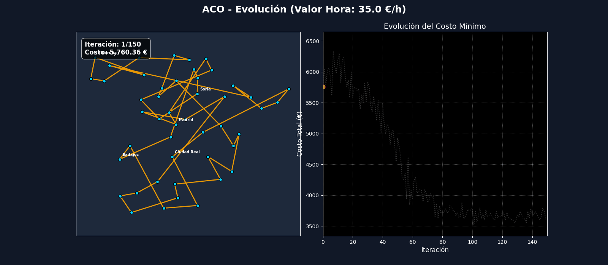
Figura 7
Evolución de la mejor ruta de la colonia de hormigas con $v = 35$ €/h.
Costo final de 3 517.69 €.
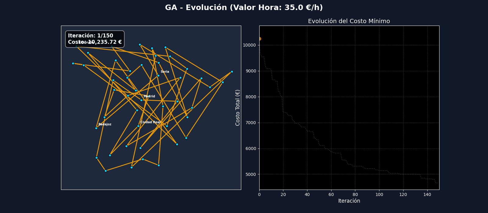
Figura 8
Evolución de la mejor ruta del algoritmo genético con $v = 35$ €/h.
Costo final de 4 637.69 €.
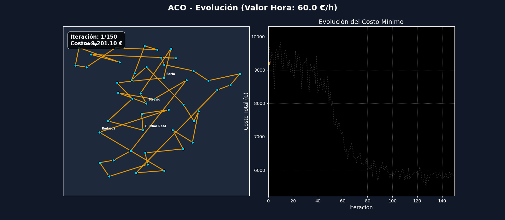
Figura 9
Evolución de la mejor ruta de la colonia de hormigas con $v = 60$ €/h.
Costo final de 5 502.11 €.
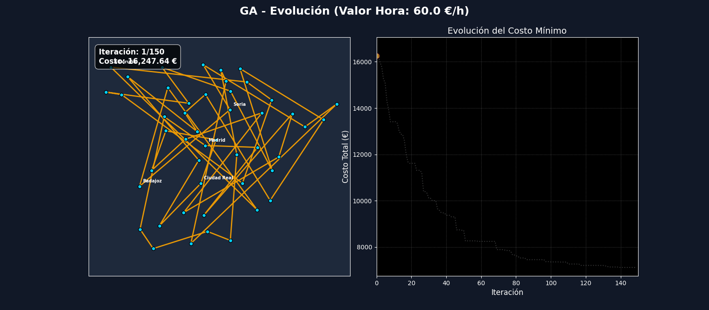
Figura 10
Evolución de la mejor ruta del algoritmo genético con $v = 60$ €/h.
Costo final de 7 108.64 €.
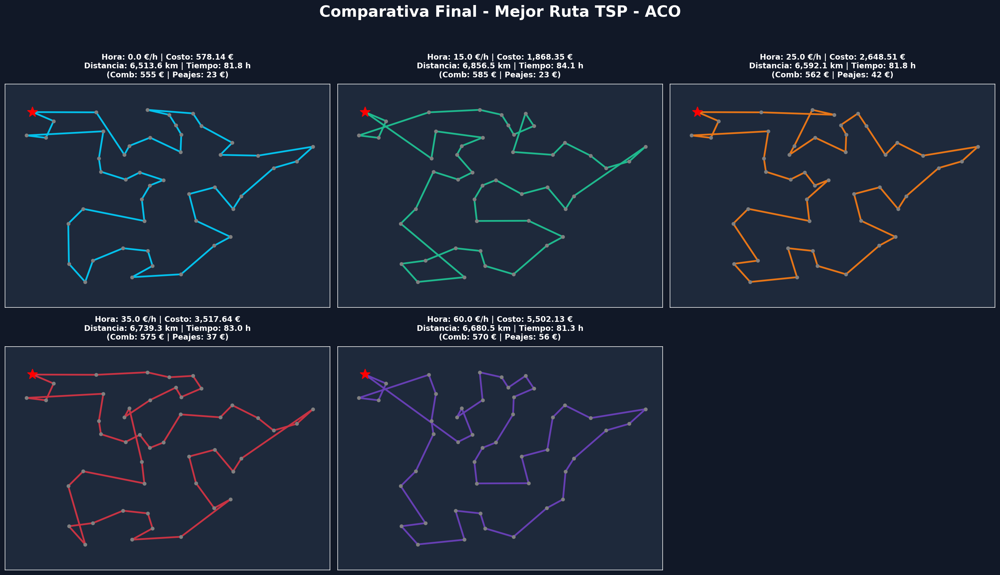
Figura 11
Mejor ruta final de la colonia de hormigas para cada valor de la hora.
Los recorridos son compactos y tienen pocos cruces.
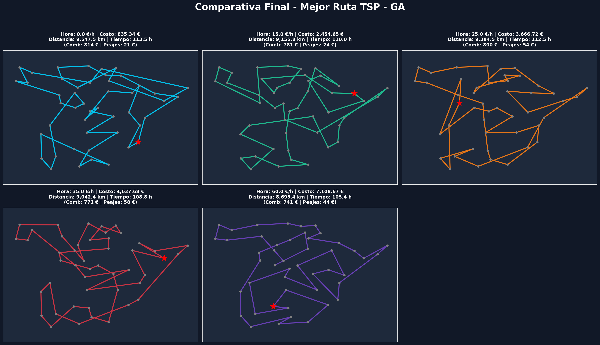
Figura 12
Mejor ruta final del algoritmo genético para cada valor de la hora.
Los recorridos tienen muchos cruces y saltos largos entre regiones lejanas.
Desglose del costo de la mejor ruta que encontró cada método.
Tabla 3
Resultados de la colonia de hormigas según el valor de la hora del vendedor
| Hora (€/h) | Costo total (€) | Distancia (km) | Tiempo (h) | Combustible (€) | Peajes (€) | Tiempo vendedor (€) | Cómputo (s) |
|---|---|---|---|---|---|---|---|
| 0 | 578.14 | 6 513.62 | 81.83 | 555.29 | 22.85 | 0.00 | 17.93 |
| 15 | 1 868.39 | 6 856.47 | 84.07 | 584.52 | 22.85 | 1 261.02 | 17.05 |
| 25 | 2 648.53 | 6 592.13 | 81.78 | 561.98 | 42.15 | 2 044.40 | 16.33 |
| 35 | 3 517.69 | 6 739.31 | 83.03 | 574.53 | 37.15 | 2 906.01 | 15.61 |
| 60 | 5 502.11 | 6 680.50 | 81.28 | 569.52 | 55.95 | 4 876.64 | 16.77 |
Tabla 4
Resultados del algoritmo genético según el valor de la hora del vendedor
| Hora (€/h) | Costo total (€) | Distancia (km) | Tiempo (h) | Combustible (€) | Peajes (€) | Tiempo vendedor (€) | Cómputo (s) |
|---|---|---|---|---|---|---|---|
| 0 | 835.34 | 9 547.48 | 113.48 | 813.94 | 21.40 | 0.00 | 0.88 |
| 15 | 2 454.67 | 9 155.78 | 110.01 | 780.54 | 24.05 | 1 650.08 | 0.94 |
| 25 | 3 666.76 | 9 384.52 | 112.51 | 800.01 | 54.05 | 2 812.70 | 0.90 |
| 35 | 4 637.69 | 9 042.44 | 108.82 | 770.87 | 57.95 | 3 808.87 | 0.90 |
| 60 | 7 108.64 | 8 695.38 | 105.40 | 741.30 | 43.55 | 6 323.79 | 0.89 |
Nota. $\text{Costo total} = \text{combustible} + \text{peajes} + \text{tiempo} \cdot v$. Una sola corrida por celda, con semilla 42. Los totales pueden diferir en centavos de los que muestran las figuras 11 y 12 por el redondeo del desglose.
Más bajo es mejor
Más bajo es mejor
La colonia de hormigas encontró rutas más baratas que el algoritmo genético con los cinco valores de la hora. Sus recorridos miden entre 6 500 y 6 900 km, mientras que los del genético miden entre 8 700 y 9 500 km. A cambio, tarda unos 15 a 18 segundos frente a menos de uno. En las curvas de convergencia el genético seguía bajando al final: su mejor valor aparece entre las generaciones 136 y 149 de 150, así que con más generaciones probablemente se habría acercado.
Con 25 €/h, el tiempo explica el 77 % del costo de la mejor ruta, y con 60 €/h, el 89 %. El combustible se mantiene entre 555 y 585 € y los peajes no pasan de 56 €. Por eso, a partir de valores razonables de la hora, la ruta barata es esencialmente la ruta rápida.
Las rutas que entrega la colonia de hormigas sí son distintas para cada valor: dos rutas cualesquiera comparten entre 27 y 34 de sus 47 tramos. Pero esa diferencia no demuestra que la ruta óptima cambie. Si se toma la ruta hallada con 0 €/h y se evalúa con el costo de 15, 25, 35 o 60 €/h, resulta más barata (1 805.6, 2 623.9, 3 442.2 y 5 488.0 €) que la que la colonia encontró para esos mismos valores (1 868.4, 2 648.5, 3 517.7 y 5 502.1 €). Es decir, parte de la variación entre rutas viene de la búsqueda estocástica y no del parámetro.
La conclusión honesta es que con una sola corrida por valor no podemos señalar a partir de qué valor cambia la ruta óptima. Responder esa pregunta exige repetir cada caso con varias semillas y comparar la distribución de costos.
Para este problema, la colonia de hormigas con 60 hormigas y 150 iteraciones produce rutas claramente mejores que el algoritmo genético con la misma población, y el valor de la hora determina casi todo el costo. Que la ruta cambie con ese valor queda como pregunta abierta hasta contar con más corridas.